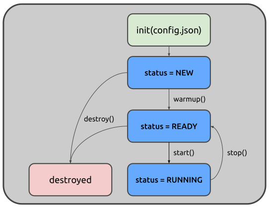

Pipelines act as graph managers and lifecycle coordinators. A pipeline object knows when to start nodes, how to connect them, and where to store their state. It transforms a declarative configuration into a running, observable dataflow system.
At its core, a Pipeline is a configuration interpreter. Strictly speaking, it doesn’t contain business logic, so its only responsibility is to instantiate nodes, wire them together according to the graph definition, and manage their collective lifecycle. This separation of concerns is deliberate: the pipeline handles topology, while nodes handle data processing and transformation.
The easiest way to interact with Juturna pipelines is through JSON objects.
The definition of a pipeline graph can be included in a plain JSON file, and
the library will compile it into a pipeline instance. When defining a
pipeline, however, we still need to provide Juturna with a few extra bits of
information.
The most basic pipeline configuration file looks something like this:
{
"version": "1.0.1",
"plugins": ["./plugins"],
"pipeline": {
"name": "my_awesome_pipeline",
"id": "1234567890",
"folder": "./running_pipelines",
"telemetry": "telemetry.csv",
"nodes": [ ],
"links": [ ]
}
}
version refers to the Juturna version in use; this field needs to be
specified, even if it is likely to be removed in the future - as of now, it is
important to keep it to make sure the API version is correct and nothing breaks
apart.
plugins is a collection of directories Juturna will look into when
automatically importing plugin nodes.
name is a symbolic name to assign to the pipeline, and will be used for
logging and static file and artifact management.
id is a unique pipeline identifier, not as handy as the pipeline name but
still required by other tools that might wrap Juturna and manage multiple
pipelines at once. With those tools, pipeline ids are likely to be assigned
automatically in order to prevent overlaps.
telemetry is an optional field that, when present, enables telemetry data to
be collected in a csv file within the pipeline folder.
folder is the path to the folder where the required pipeline tree will be
created (here is where any files generated by the pipeline are stored). Within
this folder, the configuration file of the pipe will be saved, and each node in
the pipe will be assigned a folder with its own name, where artifacts and data
can be stored.
nodes is the list of nodes composing the pipeline.
links is the list of connections between node pairs.
Once we have this configuration in place, we can go ahead and create the actual pipeline object.
import juturna as jt
pipe = jt.components.Pipeline.from_json('path/to/config.json')
The Pipeline class constructor also accepts dictionary objects:
import json
import juturna as jt
with open('path/to/config.json') as f:
config = json.load(f)
pipe = jt.components.Pipeline(config)
Instantiating a pipeline object doesn’t really do much. An empty pipeline container is created, with all the instructions required to build the actual nodes and linking them.
A pipeline object can be in only three states:
a NEW pipeline is freshly created, but the nodes within the graph still
need to be instantiated;
a READY pipeline instantiated all the concrete nodes, and acquired
system and external resources required for its functioning - as the state
name says, this pipeline is ready to go;
a RUNNING pipeline is consuming data sources, processing and sending them,
so it working (hepefully) just how it is supposed to.

There are 4 main methods to manage a pipeline lifecycle:
warmup() triggers node instantiation and linking, moving a pipeline from
NEW to READY. Internally, this calls the warm up method on every node in
the pipeline. Depending on the resources nodes need to acquire (learning
models, third-party services, network connections), calling the warmup can
be time-consuming.
start() triggers the beginning of the pipeline workflow, moving its state
from READY to RUNNING. Internally, this calls the start method on every
node in the pipeline.
stop() interrupts the pipeline execution, moving it from RUNNING to
READY. Again, this call is propagated to every node in the pipe.
destroy() can be invoked if any kind of custom memory management should be
performed by any of its composing nodes.
Any call sequence that does not respect the state transitions here discussed will generate an exception:
only a new pipe can be warmed up;
only a ready pipe can be started;
a running pipeline cannot be destroyed.
Warming up and configuring
A node defines 2 separate methods to get up and running: warmup and
configure. Ideally, you want to use the configure method to acquire
resources that need to be acquired externally, so depend not only on the
node implementation (ports, connections), and the warmup to prepare the
node internal status for execution.
Restarting a pipeline might catch fire (1.0.1-beta)
Please be aware that the pipeline lifecycle and state transitions do not currently support restarting a stopped pipeline. When designing your workflow, please assume pipelines cannot be restarted once stopped, only destroyed. If you need to stop a pipeline and later restart it, destroy it and create a new pipe instead.